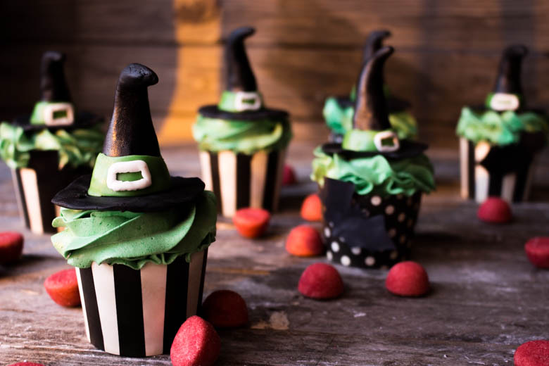
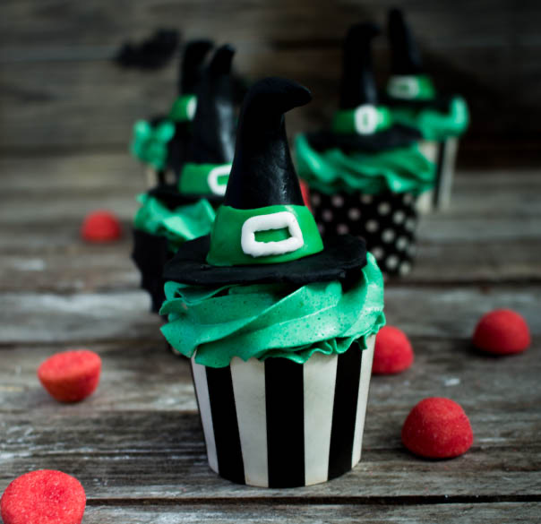
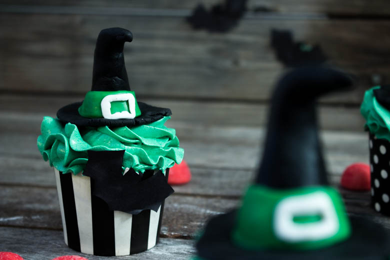
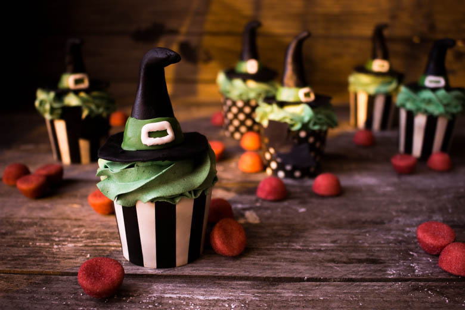
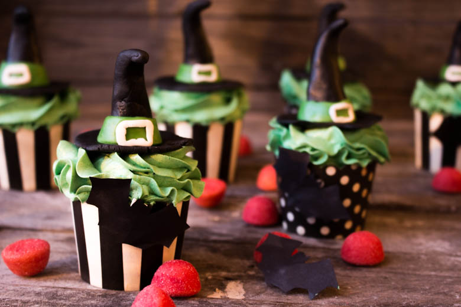

Cupcakes Halloween

TRICK or TREATS encore une fois car Halloween c’est demain! Je vous présente donc mes cupcakes Halloween.
Ceux qui me suivent depuis le début, savent surement qu’il était impensable que je ne vous prépare pas des cupcakes Halloween!! Je ne vous cache pas que j’ai été à deux doigts de ne pas en faire cette fois ci! Mais mon super chéri ne m’a pas laissé m’en sortir comme ça!
Nous revoila donc avec une nouvelle recette pour Halloween! Je ne vais pas repartir dans les brèves explications sur ce qu’est la fête d’Halloween car je l’ai déjà expliqué sur ma recette de Cake pops ICI !
Aujourd’hui pas de citrouilles ni de personnages étranges mais seulement de délicieux cupcakes Halloween aux allures de sorcières! Je tiens tout de même à préciser que mon chéri s’est lancé dans un atelier pâte à sucre afin de réaliser ces chapeaux alors vous pouvez le féliciter car il a très bien réussi la mission dans laquelle il s’est lancé! 🙂
Je ne sais pas ce que vous avez prévu pour le 31 octobre mais j’espère tout de même que vous avez pensé à faire le plein de confiseries sinon gare à la farce!! Je penserai à le rappeler dans le contenu de ma recette mais il s’agit de cupcakes au chocolat avec un topping (mon préféré!!!!) au beurre à la meringue suisse. Vous pouvez trouver mon article détaillé sur ce glaçage ici car je sais qu’il n’est pas toujours évident de trouver un glaçage peu écœurant et facilement réalisable!
C’est maintenant parti pour la recette des cupcakes d’Halloween et j’espère que la recette vous plaira!!
Ingrédients
- Beurre pommade - 125g
- Sucre - 100g
- Oeufs - 3
- Farine - 45g
- Bicarbonate de sodium - 1càc
- Sel - 1 pincée
- Chocolat noir - 160g
- Lait - 50ml
- Extrait de vanille - 1càc
- Beurre pommade - 230g
- Blancs d'oeufs temp ambiante - 4
- Sucre - 130g
- Sel - 1 pincée
- Extrait de vanille - 1 càc
- Colorant vert - 1 pointe de couteau
- Pâte à sucre noire, verte et blanche
Instructions
- Faire fondre le chocolat au bain marie
- Dans un récipient mélanger le beurre avec le sucre jusqu'à obtenir un mélange homogène
- Ajouter les œufs un à un en mélangeant entre chaque
- Dans un bol, mélanger les aliments secs (farine, bicarbonate de soude, ..)
- Incorporer une partie des aliments secs au mélange
- Verser le lait, mélanger et incorporer le reste des aliments secs
- Verser le chocolat fondu et l'extrait de vanille. Bien mélanger
- Préchauffer le four à 180 °
- Enfourner 20 minutes en surveillant
- Étape 1 : Faire monter les blancs en neige avec le sucre au dessus d'une source de chaleur.
- Étape 2 : Faire refroidir la meringue et incorporer le beurre
- Étape 3 : Glacer vos cupcakes
- A l'aide de pâte à sucre former des chapeaux de sorcières Vous pouvez faire un chapeau en une seule pièce ou sinon créer d'abord la base puis le corps du chapeau. Ajouter une bande de pâte à sucre d'une autre couleur autour du chapeau. Créer ensuite un petit carré avec de la pâte à sucre blanche par exemple pour représenter une boucle
- Déposer les chapeaux délicatement sur le glaçage des cupcakes





Les tips de la communauté
Les cupcakes Halloween reçoivent des retours majoritairement positifs avec intérêt pour les décors et la réalisation. L'auteure apprécie les commentaires et s'engage à créer d'autres recettes.
Ajustements signalés
- les laisser au frais avant de les consommer 🙂 Bonne journée